Signs: InfoBlue
47 items: Drawn 11, Pending owner decision 1, Placeholder 35
 652One-way trafficDrawn
652One-way trafficDrawn 801Parking placeDrawn804.1Parking place reserved for goods vehiclesPlaceholder
801Parking placeDrawn804.1Parking place reserved for goods vehiclesPlaceholder 804.2Parking place reserved for motor carsPlaceholder
804.2Parking place reserved for motor carsPlaceholder 811Traffic has priority over oncoming vehicles (pre-2016 number)Drawn
811Traffic has priority over oncoming vehicles (pre-2016 number)Drawn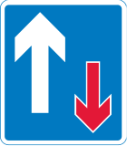
811APriority over oncoming vehiclesDrawn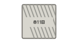
811BBeginning and end of section of road where traffic has priority over vehicles from the opposite directionPlaceholder 816No through road for vehiclesDrawn
816No through road for vehiclesDrawn 816.1Alternative to the sign shown at item 5 with a street nameplatePlaceholder
816.1Alternative to the sign shown at item 5 with a street nameplatePlaceholder 818.1Section of dual carriageway road aheadPlaceholder
818.1Section of dual carriageway road aheadPlaceholder 818.2Worded warning signPending owner decision
818.2Worded warning signPending owner decision 818.3Nature of and distance to a prohibition, restriction or requirement ahead (as diagram 818.2)Placeholder
818.3Nature of and distance to a prohibition, restriction or requirement ahead (as diagram 818.2)Placeholder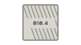
818.4Nature and location of a prohibition, restriction or requirement with indication of alternative routePlaceholder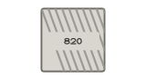
820Route unsuitable for type of vehicle indicatedPlaceholder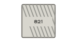
821Road ahead only wide enough for one line of vehicles, and providing information about passing placesPlaceholder 822Passing place on narrow roadPlaceholder
822Passing place on narrow roadPlaceholder 827.1Hospital aheadDrawn
827.1Hospital aheadDrawn 829.1Potential danger temporarily ahead and consequent need to proceed with cautionPlaceholder
829.1Potential danger temporarily ahead and consequent need to proceed with cautionPlaceholder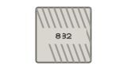
832Location of traffic surveyPlaceholder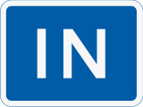
833Signs regulating the movement of vehicular traffic into and out of premises with more than one access to a roadPlaceholder 834Signs regulating the movement of vehicular traffic into and out of premises with more than one access to a roadPlaceholder
834Signs regulating the movement of vehicular traffic into and out of premises with more than one access to a roadPlaceholder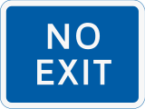
835Signs regulating the movement of vehicular traffic into and out of premises with more than one access to a roadPlaceholder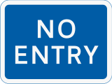
836Signs regulating the movement of vehicular traffic into and out of premises with more than one access to a roadPlaceholder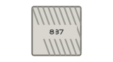
837Way in and way outPlaceholder857Information for pedestrians about tourist attractions and facilities in a nearby place or areaPlaceholder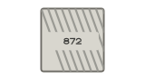
872Appropriate traffic lanes at junction aheadPlaceholder 873Additional traffic joining from the left or right ahead (diagram shows blue background – for use on motorways)Placeholder
873Additional traffic joining from the left or right ahead (diagram shows blue background – for use on motorways)Placeholder 954.5Classes of vehicle excluded from restriction or prohibition conveyed by associated sign . Where the word ‘cycles’ is used on the sign, this also represents, where relevant, electric scooters being used in a trialPlaceholder
954.5Classes of vehicle excluded from restriction or prohibition conveyed by associated sign . Where the word ‘cycles’ is used on the sign, this also represents, where relevant, electric scooters being used in a trialPlaceholder 958With-flow bus lane ahead which pedal cycles and taxis may also useDrawn
958With-flow bus lane ahead which pedal cycles and taxis may also useDrawn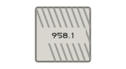
958.1With-flow mandatory cycle lane ahead, with indication of times of operationPlaceholder 959With-flow bus and cycle lane (pre-2016 number)Drawn
959With-flow bus and cycle lane (pre-2016 number)Drawn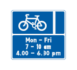
959.1With-flow cycle lane with indication of times of operationPlaceholder 959BWith-flow bus and cycle laneDrawn
959BWith-flow bus and cycle laneDrawn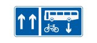
960Contra-flow bus laneDrawn 960.1One-way road with a mandatory contraflow cycle lanePlaceholder
960.1One-way road with a mandatory contraflow cycle lanePlaceholder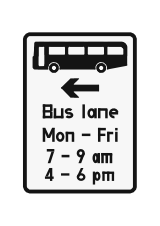
962Bus lane or lanes on a road at junction ahead, with indication of times of operationPlaceholder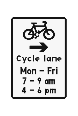
962.1Cycle lane on a road at junction ahead or, if applicable, a cycle track crossing road, or a way that would be a cycle track but for it being accessible, under a temporary statutory provision, by electric scooters being used in a trial, with indication of times of operationPlaceholder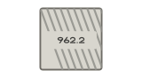
962.2Contraflow bus lane ahead on a road at a junction which pedal cycles and electric scooters being used in a trial may also usePlaceholder 963Direction in which pedestrians should look for approaching traffic when crossing a bus lanePlaceholder
963Direction in which pedestrians should look for approaching traffic when crossing a bus lanePlaceholder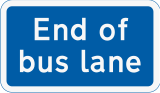
964End of with-flow bus lanePlaceholder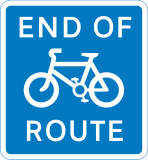
965End of cycle lane, track or routePlaceholder 967Recommended route for pedal cyclesDrawn
967Recommended route for pedal cyclesDrawn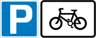
968Parking place for pedal cyclesPlaceholder 968.1Parking place for pedal cyclesPlaceholder
968.1Parking place for pedal cyclesPlaceholder 969Parking place reserved for busesPlaceholder
969Parking place reserved for busesPlaceholder 974Stopping by vehicles other than buses prohibited during the period indicatedPlaceholder
974Stopping by vehicles other than buses prohibited during the period indicatedPlaceholder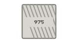
975Place where buses may stand and the stopping of other vehicles is prohibited during the period indicatedPlaceholderFaces marked from GOV.UK: traffic sign images © Crown copyright (Department for Transport), Open Government Licence v3.0; converted from the EPS.